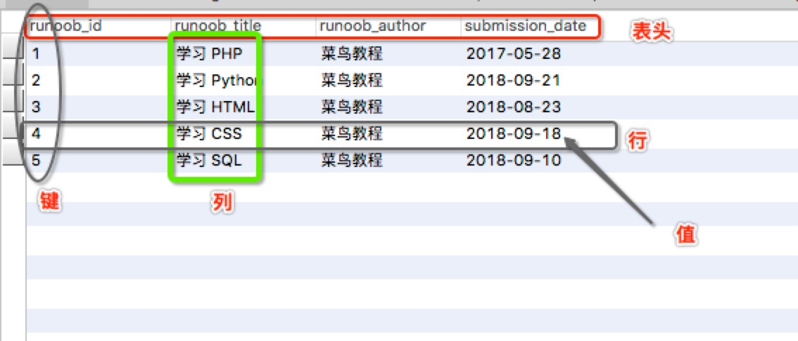

JDBC (Java DataBase Connection) 是通过JAVA访问数据库
一、MySQL基本

冗余：存储两倍数据，冗余降低了性能，但提高了数据的安全性。
主键：主键是唯一的。一个数据表中只能包含一个主键。你可以使用主键来查询数据。
外键：外键用于关联两个表。
复合键：复合键（组合键）将多个列作为一个索引键，一般用于复合索引。
索引：使用索引可快速访问数据库表中的特定信息。索引是对数据库表中一列或多列的值进行排序的一种结构。类似于书籍的目录。
使用mysql-front管理数据库
MySQL操作
1、创建与删除数据库
create/drop database dbName
2、创建表
1 | CREATE TABLE hero ( |
3、插入数据
insert into hero values (null, '盖伦', 616, 100)
4、查询数据
查询所有数据
select * from hero
统计表中总共有多少数据
select count(*) from hero
分页查询
select * from hero limit 0,5
5、修改数据
修改主键为1的数据
update hero set hp = 818 where id = 1
同理删除
delete hero set hp = 818 where id = 1
WHERE 子句类似于程序语言中的if条件，根据 MySQL 表中的字段值来读取指定的数据。
如果我们想再MySQL数据表中读取指定的数据，WHERE 子句是非常有用的。
使用主键来作为 WHERE 子句的条件查询是非常快速的。
如果给定的条件在表中没有任何匹配的记录，那么查询不会返回任何数据。
二、JDBC
1、导入mysql-jdbc的jar包（一般会放在新建的lib文件夹中）
JDBC是一个规范，遵循JDBC接口规范，各个数据库厂家各自实现自己的驱动程序(Driver)，如下图所示:
2、初始化驱动
1 | try { |
3、建立与数据库连接
1 | Connection c = DriverManager.getConnection("jdbc:mysql://127.0.0.1（本机ip地址，数据库ip）:3306（mysql专用端口号）/数据库名?characterEncoding=UTF-8"（字符集）,"root"（账号名）, "admin"); |
4、创建Satement/PreSatement
Statement s = c.createStatement();
引入包为java.sql.Satement
PreSatement
String sql = “insert into hero values(null,?,?,?)”;
// 根据sql语句创建PreparedStatement
PreparedStatement ps = c.prepareStatement(sql);
// 设置参数
ps.setString(1, “提莫”);
ps.setFloat(2, 313.0f);
ps.setInt(3, 50);
// 执行
ps.execute();
excuteUpdate与excute区别
不同1：
execute可以执行查询语句
然后通过getResultSet，把结果集取出来
executeUpdate不能执行查询语句
不同2:
execute返回boolean类型，true表示执行的是查询语句，false表示执行的是insert,delete,update等等
executeUpdate返回的是int，表示有多少条数据受到了影响
PreparedStatement优点
PreparedStatement有预编译机制，性能比Statement更快
防止SQL注入式入侵
e.g.
select * from hero where name = ‘盖伦’ OR 1=1
因为有OR 1=1，这是恒成立的,就会把这个表里的数据全部查出来,响应变得极其缓慢
使用参数设置，可读性好，不易犯错
5、执行SQL语句
CRUD是最常见的数据库操作，即增删改查
C 增加(Create)
R 读取查询(Retrieve)
U 更新(Update)
D 删除(Delete)
1)插入
String timo=”提莫”
String sql =String.format( “insert into hero values(null,’%s’,313.0,50)”,timo);
s.execute(sql); //执行sql语句
2）读取查询
1 | ResultSet rs = s.executeQuery(sql); |
3）更新
String sql = “update hero set name = ‘Tom’ where id =’2’ ‘’;
4)删除
String sql = “delete from hero where id = 5”;
6、关闭连接
先关闭Satement，后关闭Connection
不过一般都是将其放在try（）中，因为它们都实现了AutoCloseable接口
DAO
DAO=DataAccess Object
数据访问对象，将数据库相关的操作都封装在类中
步骤
1.DAO接口
1 | package jdbc; |
2.设计Hero类实现DAO接口
将不同的操作都封装在不同的函数中
数据库连接池
原理：
连接池在使用之前，就会创建好一定数量的连接。如果有线程需要连接，可以从连接池中借用，使用完毕后，线程就会把这个连接还给连接池。
倘若发生多线程并发情况，连接池里的连接被借用光了，那么其他线程就会临时等待，直到有连接被归还回来，再继续使用。
整个过程，这些连接都不会被关闭，而是不断的被循环使用这样就节省了启动和关闭连接的时间。